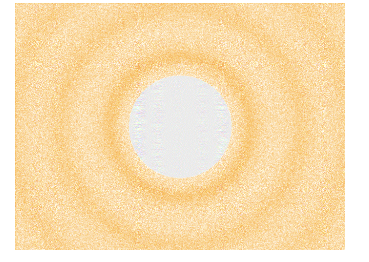
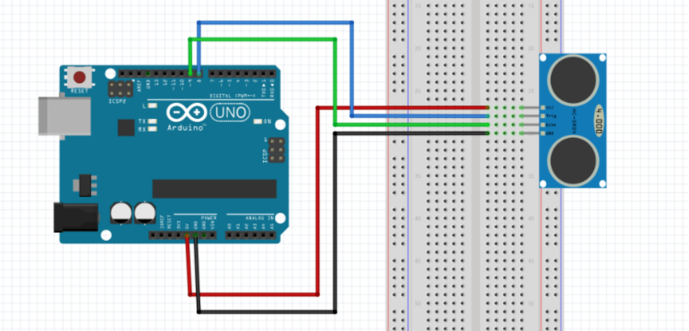
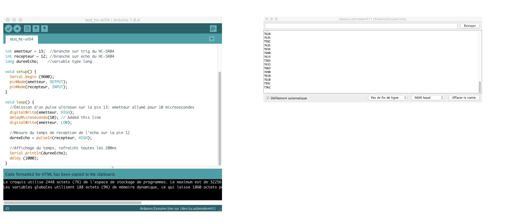
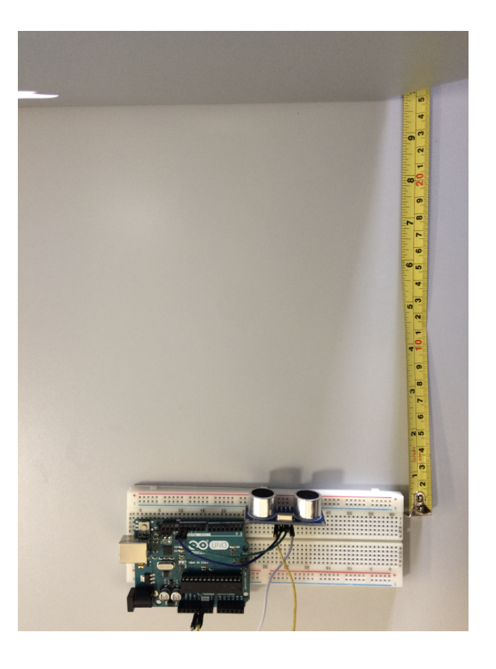
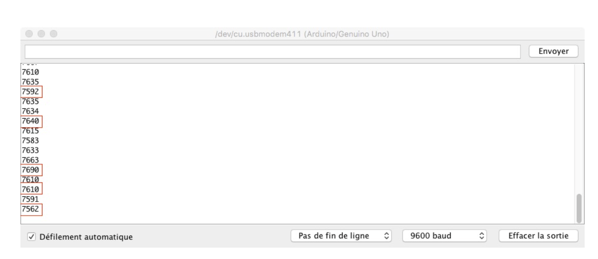
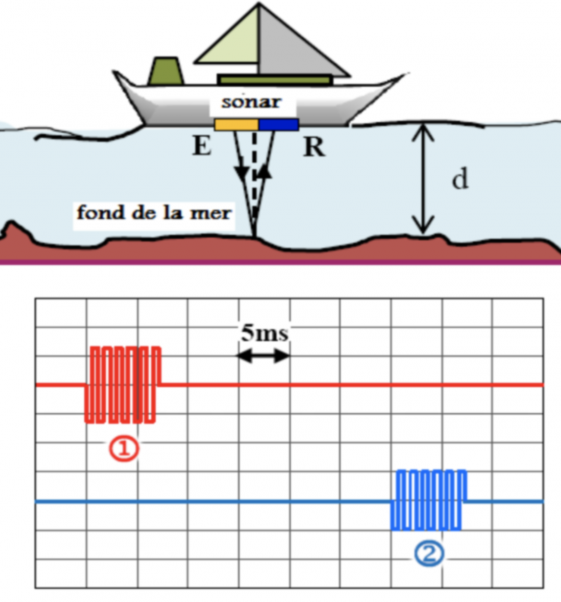

Mesure de la vitesse du son#
Contexte#
Le son peut être défini comme la vibration mécanique d’un fluide, qui se propage sous forme d’ondes [...] grâce à la déformation élastique de ce fluide (Wikipédia).
En résumé, tout comme l’onde qui se propage au fil de l’eau lorsque vous y jetez un caillou, l’onde sonore, ou accoustique, se déplace dans l’air (ou tout autre fluide, liquide ou gazeux) sous forme de compressions régulières de ce fluide (voir illustration ci-dessous). Plus les compressions se succèdent rapidement, plus la fréquence du son est élevée, donc le son perçu aigu. Plus elles sont lentes, plus la fréquence est basse et le son grave.

L'onde sonore a une vitesse propre, qui dépend de la densité du fluide dans lequel elle se déplace et sa température (2 paramètres qui influent sur la pression du fluide).
Objectif#
L'objectif de cette activité est de vérifier la vitesse du son dans l'air en mesurant de façon précise, avec Arduino, les temps de réception d'un écho d'ultrason se répercutant sur un obstacle situé à différentes distances.
Principe du capteur à ultra-son#
Le capteur de distance fonctionne sur le principe de l'écholocalisation. Il est équipé d'un émetteur et un récepteur ultrason, ce qui lui permet de détecter des obstacles distants à la manière des chauves-souris ou des cétacés. Il peut être programmé pour émettre un court ultrason et calculer le temps de réception de son écho, qui est fonction de la distance de l'obstacle et de la vitesse du son.
Expérience#
Montage#

Vous remarquerez que le câblage est on ne peut plus simple : un Arduino et un capteur de distance !
Les pins "vcc" et "GND" du capteur de distance seront branchées sur 5V et ground respectivement. La pin "Trig" (émetteur) sera branché sur la prise 13 de l'Arduino, et la pin "Echo" (récepteur) sur la prise 12 de l'Arduino..
Explications du code#
Dans un premier temps nous déclarons les variables.
- Les variables "emetteur" et "recepteur" dans lesquelles seront déclarés les numéros de pin utilisées respectivement par "Trig" et "Echo" du capteur HC-SR04.
- La variable "Delta_t" de type long (entier et grande précision) dans laquelle sera stocké le temps écoulé entre deux réceptions de l'écho.
Puis vient la partie d'initialisation : le void setup.
Très simple, il ne comporte que trois lignes :
- Initialisation de la communication série qui nous permettra de lire la valeur de "Delta_t", c'est à dire le temps mis par l'écho pour parvenir au récepteur.
- Initialisation de la pin "emetteur" (pin 13) en sortie (afin de produire un signal sonore).
- Initialisation de la pin "recepteur" (pin 12) en entrée (afin de recevoir un signal sonore).
Et pour finir, la boucle principale : le void loop.
- Les trois premières lignes permettent d'émettre un pulse ultrason :
- La pin "emetteur" est mis à l'état HIGH : l'émetteur du capteur produit un ultrason.
- Pause de 20 microsecondes
-
La pin "emetteur" est mis à l'état LOW : l'émetteur du capteur ne produit plus d'ultrason.
En résumé, nous venons d'émettre une onde sonore à très haute fréquence (domaine des ultrasons) durant 20 microsecondes. * La variable "Delta_t" prend la valeur de "pulseIn (emetteur, HIGH)".
La fonction pulseIn permet de mesurer une durée d'impulsion.
En résumé, la pin nommée "recepteur" va se mettre à l'écoute d'un signal (état HIGH). Lorsqu'elle aura atteint l'état demandé (HIGH), le programme va compter le temps écoulé (en microsecondes) jusqu'à ce que la pin perde son état (donc retourne à LOW). Pour plus de détails, consultez ceci.
La variable "Delta\t" correspond donc au temps écoulé entre 2 états HIGH de la pin "recepteur", soit 2 réceptions de signal. Ce qui correspond à un aller-retour de l'onde sonore entre l'émetteur et l'obstacle.
- Affichage du "pulseIn" dans le moniteur série.
- Délai d'une seconde (1000ms) entre 2 affichages de mesure.
Assemblage#
- Vous pouvez maintenant brancher votre arduino et téléverser le programme.
- Cliquez sur la loupe en haut à droite de la fenêtre Arduino pour faire apparaître le moniteur série. Par défaut il sera réglé sur le débit de 9600 bauds.
- Vous verrez alors dans la nouvelle fenêtre une succession de nombre : c'est le temps de réception de l'écho, en microsecondes, rafraîchi toutes les secondes (la variable "Delta_t")

Mise en place de l'expérience#
Nous allons mesurer le temps de parcours de l'écho pour plusieurs distances. Il faudra donc positionner un obstacle face au capteur de distance.

J'ai choisi les distances capteur-obstacle suivantes :
- 20 cm ;
- 40 cm ;
- 60 cm.
Étant donné que nous mesurons le temps mis par l'écho pour parvenir au récepteur, la distance parcourue par l'onde sonore sera le double (un aller-retour), soit :
- 40 cm ;
- 80 cm ;
- 120 cm.
Positionnez l'obstacle à la distance souhaitée puis démarrez l'expérience en ouvrant la fenêtre du moniteur série (pour rappel, il s'agit d'appuyer sur la loupe en haut à droite de la fenêtre Arduino).
Vous verrez s'afficher dans cette fenêtre le temps, en microsecondes, mis par l'onde sonore pour faire un aller-retour entre le capteur et l'obstacle.
Les données devraient être relativement stables, particulièrement pour les plus courtes distances.
Notez 5 valeurs parmi les données recueillies, dans chaque condition.
Voici un exemple :

Ici sont sélectionnés les valeurs maximales et minimales ainsi que celles qui semblent le plus représentatives.
Résultats#
Nous allons mesurer du temps de parcours de différentes distances par l'onde sonore.
| Distance (cm) | temps1 | temps2 | temps3 | temps4 | temps5 | temps moyen (\(\mu\)s) |
|---|---|---|---|---|---|---|
Le tableau suivant résume les résultats précédents, c'est à dire les distances et les temps de parcours moyens obtenus dans mes conditions :
| Distance (cm) | 20 cm | 40cm | 60 cm |
|---|---|---|---|
| Distance parcourue par l'onde (cm) | |||
| temps moyen (\(\mu\)s) |
Exploitation et conclusion#
- Déterminer la vitesse du son pour ces trois distances ;
- En faire la moyenne.
- Conclure
Pour les plus rapides#
Exercice#
Le sonar est un capteur formé d'une sonde qui contient un émetteur \(E\) et un récepteur \(R\) des ultrasons. Il est utilisé dans la navigation maritime pour connaître la profondeur d'eau et permet aux navires de s'approcher de la cote en toute confiance.
Pour déterminer la profondeur, l'émetteur \(E\) émet des ultrasons sinusoïdales vers le fond de la mer, une partie de ces ultrasons réfléchissent et sont captées par le récepteur \(R\).
Le graphe ci-dessous représente le signal émis par E et le signal reçu par R.

- Quelle est la différence entre les ondes sonores et les ondes ultrasonores ?
- Rappeler l'expression (la formule ) de la vitesse (autrement appelée célérité) d'une onde. Vous exprimerez cette vitesse en fonction de la distance \(d\) (m) et en fonction de la durée de l'aller-retour \(\Delta t\) (s).
- On utilise des ultrasons de fréquence \(f\) = 200 kHz qui se propagent dans l'eau de mer avec une célérité \(v_{eau} = 1500\) m.s\(^{-1}\)
- a. À partir du graphe, déterminer la durée \(\Delta t\) entre l'émission 1 et la réception 2. b. On suppose que les ultrasons suivent une trajectoire verticale. Calculer la valeur de \(d\).
Capteur de distance#
Réaliser un capteur de distance. Ce capteur donnera une distance en cm. Pour cela, il faut :
- déclarer une autre variable \(d\) de type double ;
- trouver l'expression de la distance \(d\) en fonction des autres variables du programme ; Attention aux unités
- l'afficher à l'aide de la fonction
Serial.println().